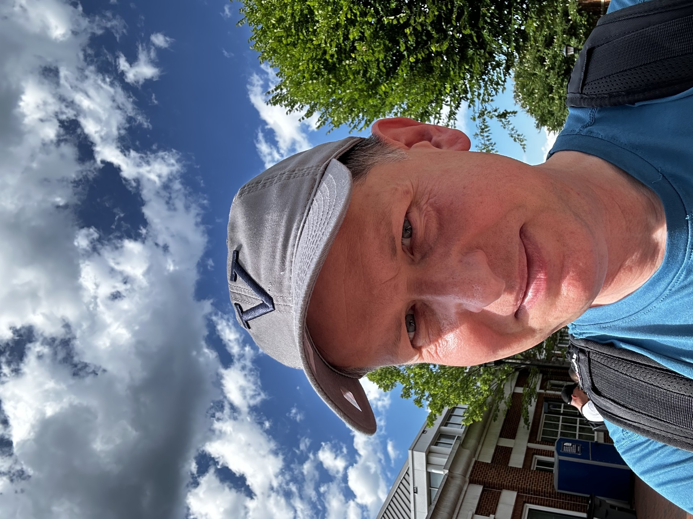
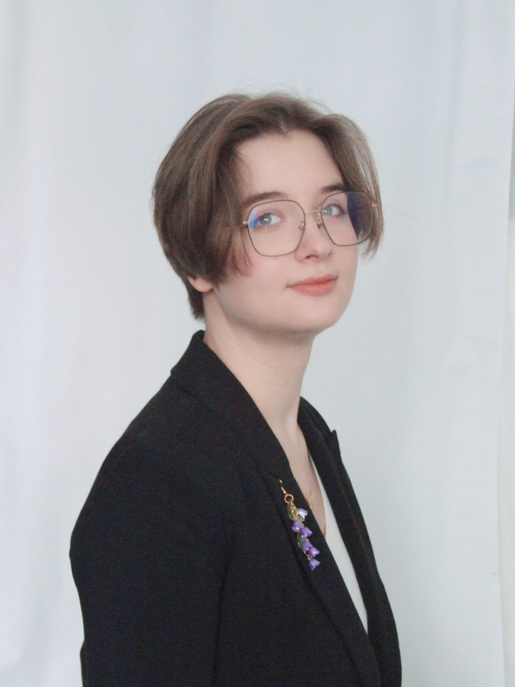
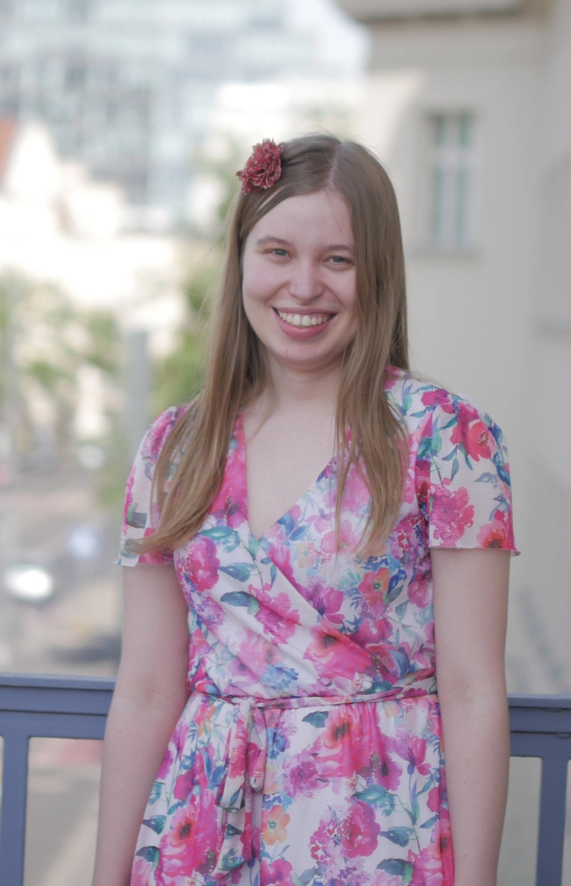

Members of the project

Marcin Kilarski
Faculty of English, Adam Mickiewicz University in Poznań
Research interests
- Linguistic typology
- History of linguistics
- Indigenous languages of North America
- Language contact
Marc Allassonnière-Tang
Lab Ecological Anthropology UMR 7206, CNRS/MHNH/University Paris Cité
Research interests
- Linguistic typology
- Computational linguistics
- Classification and regression
- Bayesian phylogenetic inference
- Agent-based simulation modeling

Harald Hammarström
Department of Linguistics and Philology, Uppsala University
Research interests
- Linguistic typology
- Historical Linguistics
- Computational Linguistics
- Papuan Languages

Antonina Świdurska
School of Languages and Literatures, Adam Mickiewicz University in Poznań
Research interests
- Linguistic typology
- Computational linguistics
- Sociolinguistics
- Polish ethnolects (Silesian, Kashubian)
- Sociolects

Nikola Zduńczyk
Faculty of English, Adam Mickiewicz University in Poznań
Research interests
- Linguistic typology
- Minority languages
- Sociolinguistics
- Celtic languages